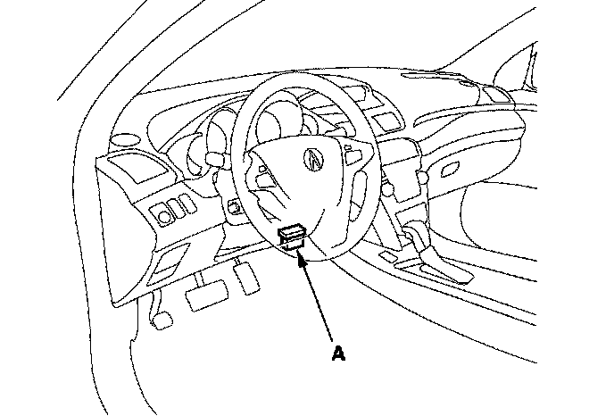

Operation CHARM
: Car repair manuals for everyone.
Home
>>
Acura
>>
2007
>>
MDX V6-3.7L
>>
Repair and Diagnosis
>>
Transmission and Drivetrain
>>
Transmission Control Systems
>>
Testing and Inspection
>>
Reading and Clearing Diagnostic Trouble Codes
>>
Clearing Diagnostic Trouble Codes
>>
Without Scan Tool
Without Scan Tool
Clear A/T DTCs Procedures
1.
Connect the HDS to the
DLC
(A).

2.
Turn the
ignition switch
ON (II).
3.
Clear the DTC(s) on the HDS screen.
NOTE:
If the HDS does not communicate with the PCM, troubleshoot the
DLC
circuit.